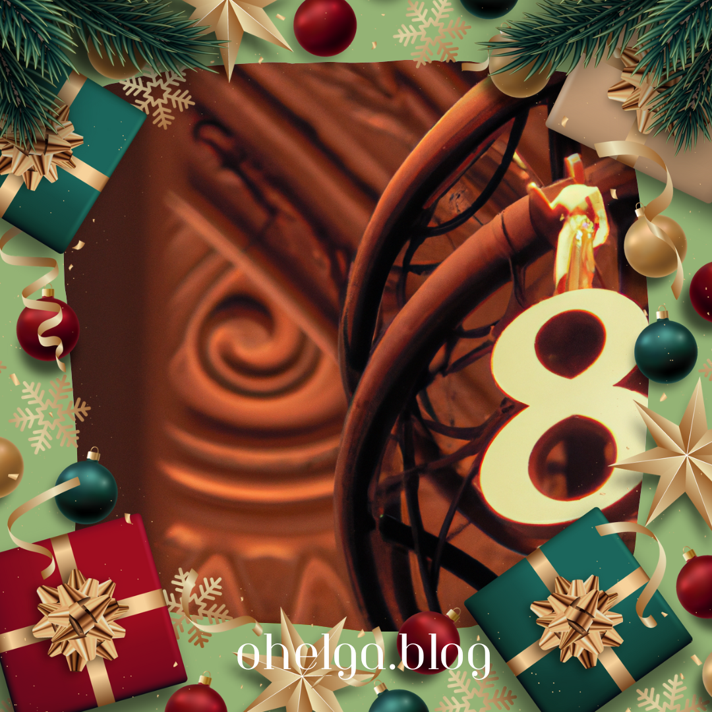

Tänään tarjoilemme todellista klassikkoa. Tämä versio oli monien kuulijoiden pyynnöstä viime vuonna, Ja kukaan ei voi sanoa, ettemme kuuntele kuuntelijoitamme! Denna version har rymd, denna version ÄR ett eget universum. Men hur går det med tone? I dagens lucka: Mahalia Jackson: O Holy Night.

Tänään tarjoilemme todellista klassikkoa. Tämä versio oli monien kuulijoiden pyynnöstä viime vuonna, Ja kukaan ei voi sanoa, ettemme kuuntele kuuntelijoitamme! Denna version har rymd, denna version ÄR ett eget universum. Men hur går det med tone? I dagens lucka: Mahalia Jackson: O Holy Night.
Kommentit / Kommentarer (2)
<p>En klockren 10</p>
<p>Här var det inte tala om hur hon klarade tonen. Hon VAR tonen från början till slut. Vilken röst! Nej det blir en 10:a för mig med, gillade även stenkaksknastret, mycket stämningsfullt. Tror hon är ännu mer känd för sin version av Silent Night, Holy Night, kolla in även den hör ni!</p>